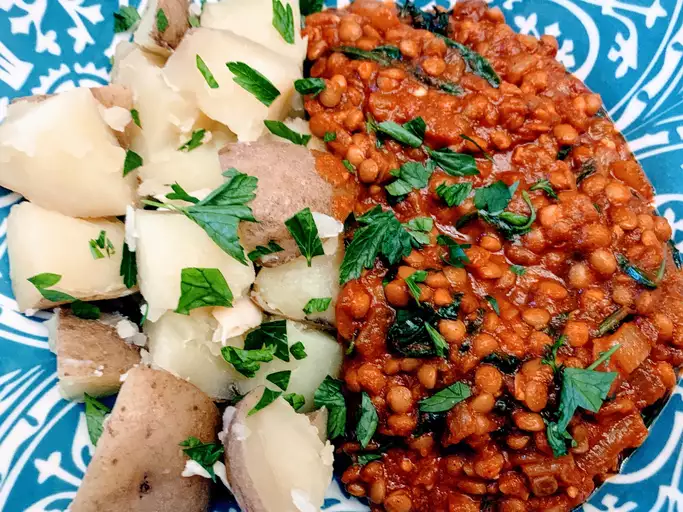

Red Lentil Curry

Description
Red lentil curry is a savoury and hearty dish that can be whipped up
with just a few essential ingredients.
This flavourful and protein rich recipe can be adjusted
to suit spiciness while still being rich and sumptuous.
Ingredients
- Red Lentils
- Ginger
- Garlic
- Green chillies
- Crushed tomatoes
- Vegetable broth
- Cumin powder
- Coriander powder
- Garam Masala
- Curry Powder
- Red Chilli Powder
Steps
- Melt the coconut oil in a large, deep skillet over medium-high heat. Once it’s hot and shimmering, add the garlic, ginger, fresh turmeric, and Serrano pepper. Sauté until they’re soft and fragrant.
- Add the spices and fry for a few minutes making sure not to burn it
- Add the chopped tomatoes and mix well
- Cover the dish and cook for 20 minutes
- Add in te coconut milk, lower the heat and cook for another 5 minutes